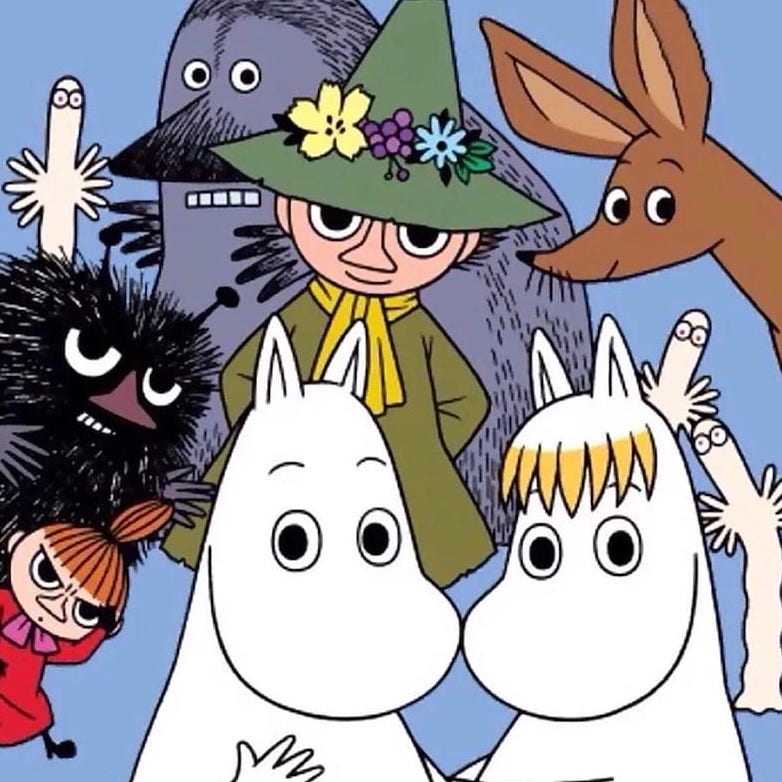
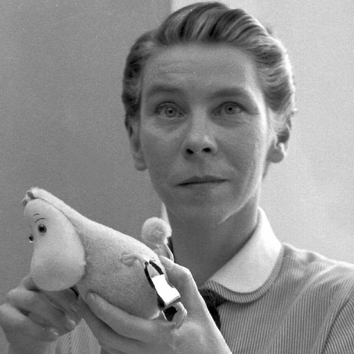

WELCOME TO
MOOMINVALLEY

Who are the Moomins?
The Moomins are a creation of author Tove Jansson. They Moomin family is Moomintroll, Moominmamma, and Mooinpappa who all live in Moominvalley with other creatures and characters. Scroll below to learn about the Moomins and their freinds.
